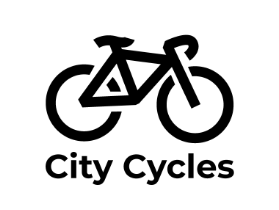
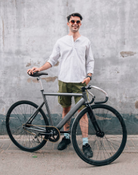
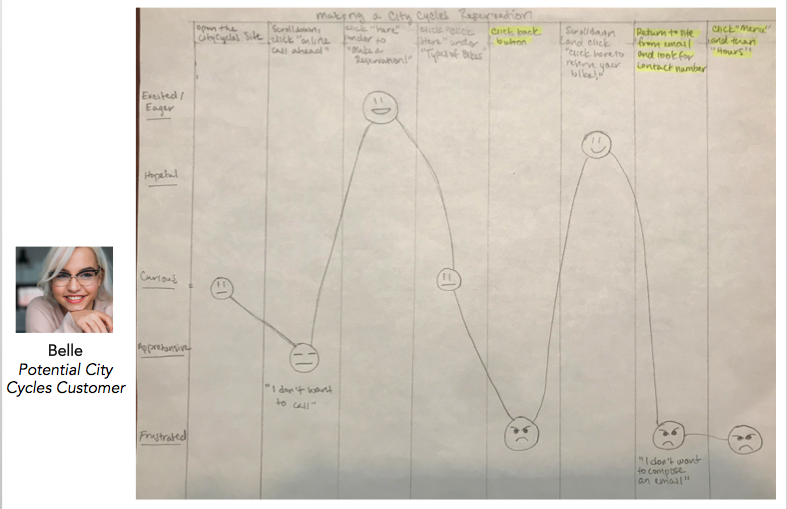
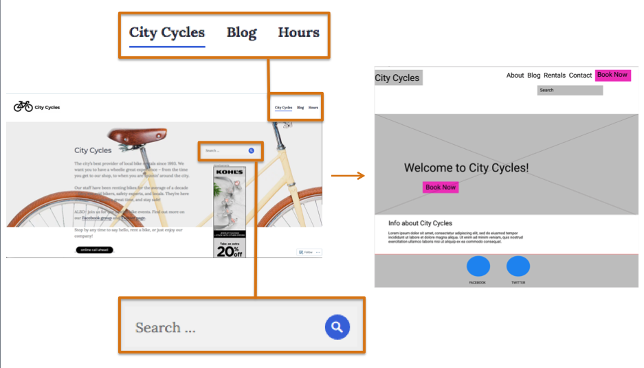
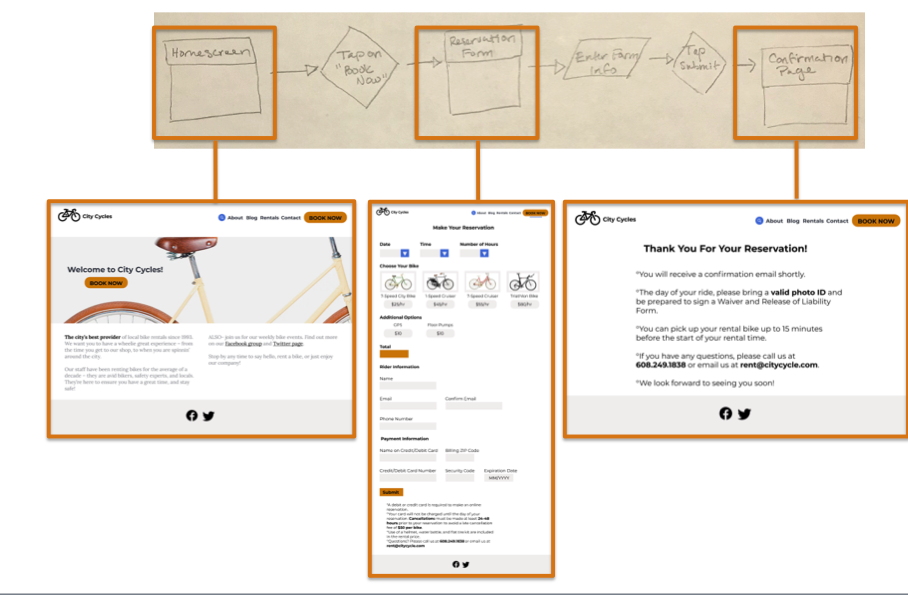
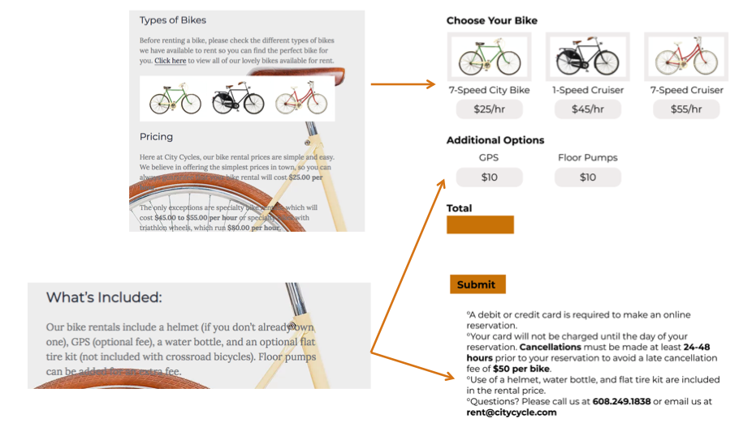

Overview

What is City Cycles?
A fictional bike rental shop in a local downtown area. They allow patrons to make reservations online, by phone or in-store. Visit the original City Cycles' website.
What are they requesting?
A consultation for understanding why more patrons are not making online reservations and a solution to increase the number of online reservations.
Role
- Conducted user research
- Developed new user flow and wireframes
- Developed a high-fidelity, interactive prototype
- Conducted usability testing
Problem & Process
Revamp an online reservation system that allows users to rent bicycles.
Patrons are avoiding what is in place online. Instead, they are calling or stopping by the store.
How might we increase the number of bicycle reservations made through the online system?
Understand the experience to generate empathy:
- User Interviews
- Personas
- Journey Mapping
Use research insights to map a new user flow & develop wireframes & a prototype
Test the solution, incorporate user feedback & determine the next steps
User Research
User interviews revealed a confusing booking experience.
Users were confused by the requirements, conflicting directions and labeling.


User interviews and user survey results informed the creation of personas that allowed me to keep the users' needs, and not the development of excessive features, a priority.
Regular and potential City Cycles customers share similar goals.

Ash
Regular City Cycles Customer
Belle
Potential City Cycles Customer
Goals:
- Would like to spend more time outdoors
- Would like to quickly and easily book a reservation online
Frustrations:
- "I always end up calling to reserve because it's the only real way you know you have a reservation."
- Feels the best way to confirm a reservation is to call or stop by City Cycles
Goals:
- Would like to spend more time exploring downtown with friends
- Would like to quickly and easily schedule activities with friends online
Frustrations:
- The website is "unclear"
- Feels "misled" by the booking process
Belle's journey map identified issues with the website's navigation, an excessive number of steps in the process and a lack of readily available contact information that made for an emotional rollercoaster of a journey ending in frustration.

Flows, Wireframes & Prototype
User research highlighted the need for changes to the navigation menu, search bar and home page layout.

The new, ideal user flow directed the development of the form and confirmation page.

The user's desire to be able to quickly and clearly see what was needed and available for a reservation was key to converting the text-heavy process to a more visual form.

Usability Test & Next Steps
The high-fidelity, interactive prototype created a more realistic experience which allowed for valuable feedback during usability testing.
Valuable Usability Test Feedback:
A more personalized confirmation message with a confirmation code would make the user feel more secure that the reservation was received.

Usability Test Prototype

Prototype Updated Based on Usability Test Feedback
After the usability test and review, I made the following recommendations:
- Launch the prototype updates with user feedback incorporated.
- Monitor the number of online reservations being made over the next month with an expectation they will increase.
- After a month, conduct additional user interviews and usability tests to determine if users' needs are still being met.